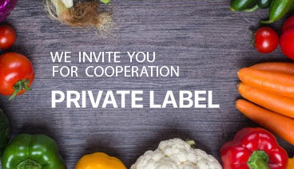

Mustard Dijon
- Made of mashed seeds of mustard greens and white mustard, with addition of natural grape vinegar, salt and spices
- Rich spicy flavor, salty taste, soft creamy texture
- It is possible to package the product in glass jars with twist-off lid or in plastic buckets of different weight
- Shelf life can be up 16 months, depending on the type of packaging and storage conditions



RUNA ARE BORN IN THE KITCHEN
Taking care of the loved ones is probably one of the most pleasant things to do. In our large kitchen "Runa" we do everything possible for our products to taste just like dishes cooked at home. As simple as that-a thorough selection of high-quality natural ingredients, and a careful adherence to the cooking process. Our main secret - we do not produce sauces "Runa", we cook them with love instead. Food ingredients are processed minimally for the maximum preservation of their useful properties; glass jars are steam-sterilized. We are proud to say that food products by "Runa" are born in the kitchen!